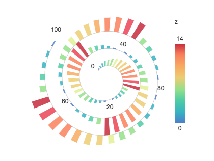

Chart
获取方式： G2.Chart。
创建一个具体的图表实例。
var chart = new G2.Chart({
id: 'c1',
width: 1000,
height: 500,
plotCfg: {
margin: [10, 20, 10, 20],
}
});属性
以下属性是创建 chart 图表实例时可配置的属性：
id
类型：String
对应图表的 DOM 容器的 id。
container
类型：HTMLDivElement
除了传递 id 值来指定图表容器，也支持直接传入容器的 html 节点对象，如下所示：
var chart = new G2.Chart({
container: document.getElementById('c1'),
width : 1000,
height : 500
});通过调用 chart.get('container') 可获取该属性。
forceFit
类型：Boolean
设置图表的宽度是否自适应，默认为 false，设置为 true，则图表 chart 会继承父元素的宽度，用户设置的 width 则不生效。
syncXYScales
类型：Boolean
当 chart 下创建了多个视图 view 的时候，通过设置该属性指定是否需要统一所有视图的 X 和 Y 度量，默认为 false，当设置为 true 时，会对 x y 两个维度对应的线性度量进行统一，默认会按照范围最大的度量为标准进行统一。但对于在 chart 或者 view 上进行了列定义的度量则不参与统一步骤：
- 如果在 chart 上对 x 、y 两个维度对应的字段进行了列定义，则会按照此列定义为准，并且该 chart 下的 views 也以此列定义为准；
- 如果 chart 中的 view 也进行了列定义，那么就以自己的列定义为准。
示例： 地图
width
类型：Number
设置图表的宽度。
height
类型：Number
设置图表的高度。
pixelRatio
类型：Number
设置像素分辨率。
data
类型：Array
设置图表的数据源，data 是一个包含 JSON 对象的数组。
通常我们会使用 chart.source(data[, colDef, namesArr]) 设置数据源。
animate
类型：Boolean
chart 是否执行动画，默认值为 true，执行， false 不执行。
plotCfg
类型：Object
设置图表绘图区域的配置信息，包括外边距、边框、背景等信息。
图表布局如下图所示：

橙色区域为 background，灰色区域为 border。
支持的配置属性:
var plotCfg = {
margin: [10,20,20,30], // 边距设置，接受参数同 css 的 margin
border: {
stroke: 'red', // 边框颜色
strokeOpacity: 0.4, // 边框的透明度设置，0 至 1 范围的数据
lineWidth: 1, // 边框粗细
fill: '#ff8800' // 设置整个容器的背景色
fillOpacity: 0.4, // 背景色的透明度设置，0 至 1 范围的数据
radius: 5 // 边框的圆角
}, // 边框设置 图形属性
background: {
stroke: 'red', // 边颜色
strokeOpacity: 0.4, // 边框的透明度设置，0 至 1 范围的数据
lineWidth: 1, // 边框粗细
fill: '#efefef', // 背景色
fillOpacity: 0.4, // 背景色的透明度设置，0 至 1 范围的数据
radius: 30 // 圆角设置
} // 绘图区域背景设置
};通过 chart.get('attrName') 可以获取如下只读属性：
canvas
类型：G2.Canvas
在教程 G2 图表的主要组成章节中提到，G2 绘制的图表由三层 canvas 组成，其中 canvas 用于绘制 geom。
frontCanvas
类型：G2.Canvas
最上层的 canvas，图例 legend、提示信息 tooltip、和 text tag html 这三种类型的辅助标记 guide 在这一层绘制。
backCanvas
类型：G2.Canvas
最下层的 canvas，坐标轴 axis 和 line image rect arc 这四种类型的辅助标记 guide 在这一层绘制。
plotRange
类型：Object
该属性包含整个图表的绘图区域范围内各个关键坐标点的信息。
通过调用 chart.get('plotRange') 获取。

具体结构如下：
{
'start': {'x':100,'y':320}, // 绘图区域起始点坐标，可以理解为坐标系原点
'end': {'x':720,'y':40}, // 绘图区域结束点坐标
'tl': {'x':100,'y':40}, // 绘图区域左上角点坐标，top-left
'tr': {'x':720,'y':40}, // 绘图区域右上角点坐标，top-right
'bl': {'x':100,'y':320}, // 绘图区域左下角点坐标，bottom-left
'br': {'x':720,'y':320}, // 绘图区域右下角点坐标，bottom-right
'cc': {'x':410,'y':180} // 绘图区域中心店坐标
}views
类型：Array
返回该 chart 实例包含的所有视图 View 对象，亦可通过 chart.getViews() 方法获取。
geoms
类型：Array
返回该 chart 实例包含的所有几何标记 Geom 对象，亦可通过 chart.getAllGeoms() 方法获取。
scales
类型：Object
返回 chart 实例的所有 scale 度量对象。
options
类型：Object
返回生成 chart 实例相关的所有配置项，详见 配置项支持。
方法
source
方法名：chart.source(data[, colDefs, namesArr])
说明：配置图表的数据以及相关的列定义信息。
参数
data: Array数据源数据，标准的 JSON 数组。
colDefs: Object【可选】，用于数据字段的列定义，如设置数据的类型，显示别名，时间类型的展示格式等，不同的数字类型的配置项不同，详情参考。
namesArr: Array作为附加字段，用于补全数据源包含的数据字段，常用于数据源含有不同数据字段的记录。
代码示例
var data = [
{type: 0, value: 1},
{type: 1, value: 2},
{type: 2, value: 3},
{type: 2, value: 3, color: '#f80'},
];
chart.source(data, {
type: {
type: 'cat', // 声明 type 字段为分类类型
values: ['A', 'B', 'C'] // 重新显示的值
alias: '类型' // 设置属性的别名
}
}, ['color']);cols
方法名：chart.cols(cfg)
说明：为多个数据字段进行列定义。
注意：
- 该方法是对于数据进行定义，会影响后面图形的绘制，所以必须先于图形语法语句（
chart.<geomType>.position()...）进行声明； - 如数据字段 dim 在
chart.source()和chart.cols()中均有定义，那么chart.cols()中的配置会覆盖chart.source()中的配置。
参数
cfg: Object用于数据字段的定义，如数据的类型，显示别名，时间类型的格式等，不同的数字类型的配置项不同，详情参考。
代码
var data = [
{type: 0, value: 1},
{type: 1, value: 2},
{type: 2, value: 3},
];
chart.cols({
'type': {
type: 'cat', // 声明 type 字段为分类类型
values: ['A', 'B', 'C'] // 重新显示的值
alias: '类型' // 设置属性的别名
},
'value': {
type: 'cat'
}
});col
方法名：chart.col(dim, cfg)
说明：为对应的数据字段进行列定义，当需要对多个字段进行列定义时，推荐使用 chart.source() 或者 chart.cols()。
注意：
- 该方法是对于数据进行定义，会影响后面图形的绘制，所以必须先于图形语法语句（
chart.<geomType>.position()...）进行声明； - 如数据字段 dim 在
chart.source()和chart.col()中均有定义，那么chart.col()中的配置会覆盖chart.source()中的配置。
参数
dim: String数据源中对应的字段名，表示只为该 dim 进行列定义。
cfg: Object用于数据字段的定义，如数据的类型，显示别名，时间类型的格式等，不同的数字类型的配置项不同，详情参考。
代码
var data = [
{type: 0, value: 1},
{type: 1, value: 2},
{type: 2, value: 3},
];
chart.col('type', {
type: 'cat', // 声明 type 字段为分类类型
values: ['A', 'B', 'C'] // 重新显示的值
alias: '类型' // 设置属性的别名
});axis
方法名：chart.axis(dim, cfg)
说明：配置图表坐标轴。
chart.axis(false)
不展示所有的坐标轴。
chart.axis(dim, cfg)
参数
dim: Stringdim 对应数据源中的字段名，即指定设置该字段对应的坐标轴显示样式。
cfg: Object设置坐标轴配置信息，如果值为
false，表示不显示该字段对应的坐标轴。可配置属性如下：

chart.axis('dim', false); // 不显示该字段对应的坐标轴
chart.axis('dim', {
position: 'top', // 设置坐标轴的显示位置，可取值 top bottom left right
formatter: function(dimValue) {
return (dimValue / 1000).toFixed(0) + 'k';
}, // 回调函数，用于格式化坐标轴上显示的文本信息
line: {
lineWidth: 1, // 设置线的宽度
stroke: '#ccc' // 设置线的颜色
}, // 设置坐标轴线的样式，如果值为 null，则不显示坐标轴线 图形属性
labels: {
label: {
textAlign: 'center', // 文本对齐方向，可取值为： start middle end
fill: '#404040', // 文本的颜色
fontSize: '12', // 文本大小
fontWeight: 'bold', // 文本粗细
rotate: 30 * Math.PI / 180, // 文本旋转 30 度，需要将 30 度转化为弧度，2.3.0 及以上版本只支持弧度设置
textBaseline: 'top' // 文本基准线，可取 top middle bottom，默认为middle
}, // 设置坐标轴文本的显示样式，如果值为 null，则不显示坐标轴文本
autoRotate: true // 是否需要自动旋转
},
title: {
fontSize: '12',
textAlign: 'center',
fill: '#999',
fontWeight: 'bold'
}, // 坐标轴标题设置，如果值为 null，则不显示标题
tickLine: {
lineWidth: 1, // 刻度线宽
stroke: '#ccc', // 刻度线的颜色
value: 5, // 刻度线的长度
}, // 坐标轴刻度线配置
titleOffset: 45, // 设置标题 title 距离坐标轴线的距离
labelOffset: 20, // 设置坐标轴文本 label 距离坐标轴线的距离
grid: {
type: 'polygon', // 用于极坐标下网格线样式的配置
odd: {
fill: '#ccc',
opacity: 0.3,
stroke: '#999'
}, // 奇数项背景样式设置
even: {
fill: '#ccc',
opacity: 0.3,
stroke: '#999'
}, // 偶数项背景样式设置
line: {
stroke: '#d9d9d9', // 网格线的颜色
lineWidth: 1, // 网格线的宽度
lineDash: [4, 4] // 网格线的虚线配置，第一个参数描述虚线的实部占多少像素，第二个参数描述虚线的虚部占多少像素
} // 设置坐标轴网格线，如果 grid: null 则代表不绘制网格线
}, // 坐标轴栅格线的配置信息，默认只有左边的坐标轴带有栅格线，null 为不显示。
gridAlign: 'start'// 栅格的位置跟坐标轴刻度线(tickLine)的对齐方式，当前仅支持 start 和 middle
});legend
方法名：chart.legend(dim, cfg)
说明：设置图例样式。
chart.legend(false)
不显示所有的图例。
chart.legend(cfg)
为默认的图例进行配置，在图例章节我们提到过，shape, color, size 这三个图形属性如果判断接收的参数是数据源的字段时，会自动生成对应的图例。所以当 chart.legend() 第一个参数是一个 Object 对象时，表示默认为所有自动生成的图例设置样式。

参数
cfg: Object
分类类型和连续类型的配置有一定的区别，下面列出了这两种类型支持的可配置的属性：
注意：选中模式配置属性 selectedMode， 在 G2@2.3.0 及以上 已改为 mode，2.3.0 以下版本请使用 selectedMode。
// 分类类型图例
chart.legend({
position: 'right', // 图例的显示位置，有 'top','left','right','bottom'四种位置，默认是'right'。
leaveChecked: false, // 是否保留一项不能取消勾选，默认为 false，即不能取消勾选。
mode: 'multiple' || 'single' || false, // 设置图例筛选模式，默认为 'multiple' 多选，'single' 表示单选，false 表示禁用筛选
title: null, // 是否展示图例的标题，null 为不展示，默认 top bottom 两个位置的图例不展示标题。
spacingX: 10, // 用于 position 为 top 或者 bottom 时调整子项之间的水平距离
spacingY: 12, // 用于 position 为 left 或者 right 时调整子项之间的垂直距离
unChecked: '#CCC', // 未选中时 marker 的颜色
wordSpaceing: 2, // marker 和文本之间的距离
dx: 5, // 整个图例的水平偏移距离
dy: 10, // 整个图例的垂直偏移距离
itemWrap: false, // 是否自动换行，默认为 false，true 为自动换行
word: {
fill: 'red',
fontSize: 14
}, // 图例各个子项文本的颜色
back: {
fill: 'red'
}, // 图例外边框和背景的配置信息
formatter: function(val) {
return val + '%';
}, // 格式化图例项的文本显示
marker: 'circle', 'square', 'bowtie', 'diamond', 'hexagon', 'triangle', 'triangle-down', 'hollowCircle', 'hollowSquare', 'hollowBowtie', 'hollowDiamond', 'hollowHexagon', 'hollowTriangle', 'hollowTriangle-down', 'cross', 'tick', 'plus', 'hyphen', 'line' // 配置 marker 的显示形状
});// 连续类型图例
chart.legend({
mode: false, // 关闭连续图例的筛选功能，默认为开启状态
width: 30, // 连续图例宽度
height: 80, // 连续图例高度度
position: 'right', // 图例的显示位置，有 'top','left','right','bottom'四种位置，默认是'right'。
title: null, // 图例的标题配置，null 为不展示，默认 top bottom 两个位置的图例不展示。
word: {
fill: 'red'
}, // 文本属性
back: {
fill: 'red'
} // 图例外边框和背景的配置信息，是一个矩形 图形属性
});chart.legend(dim, cfg)
参数
dim: String可以传入对应图例的数据源的数据字段名。
cfg: Object为对应字段的图例图例配置信息，属性同上述，这里不再说明。
coord
方法名：chart.coord(type[, cfg])
说明：设置图表坐标系，并可对坐标系进行各种操作。注意 chart.coord(type[, cfg]) 操作返回的不是 chart 对象，而是同 Coord 坐标系有关的一个辅助类，以便进行坐标系的各种变换。
参数
type: String坐标系的类型，具体包括：
| type | 说明 | 示例 |
|---|---|---|
rect |
默认类型，直角坐标系，由 x, y 两个垂直的维度构成。 |  |
polar |
极坐标系，由角度和半径 2 个维度构成。 |  |
clock |
极坐标的一种，用于绘制时钟的坐标系。 |  |
gauge |
极坐标的一种，仪表盘坐标系。 |  |
theta |
一种半径固定的极坐标系，常用于饼图。 |  |
map |
地理坐标系，支持不同类型的地理投影 |  |
helix |
螺旋坐标系，常用于周期性数据 |  |
cfg: Object【可选】 坐标系的配置信息。
对于 type 为
polar、theta类型的极坐标系，其可配置的 cfg 属性如下：chart.coord('polar | theta', { radius: 0.5, // 设置半径，值为 0 至 1 的小数 inner: 0.3 // 内部极坐标系的半径，[0 - 1]的小数 startAngle: 弧度, // 起始角度 endAngle: 弧度 // 结束角度 });对于
map类型的坐标系，情况比较特殊，对于不同的投影支持的配置参数不同。目前，您可以直接复制下列代码即可使用 G2 提供的map坐标系。// 适用于中国地图的 albers 投影 chart.coord('map', { projection: 'albers', // 指定投影方法 basic: [110, 0, 25, 47], // 指定投影方法的基本参数，[λ0, φ0, φ1, φ2] 分别表示中央经度、坐标起始纬度、第一标准纬度、第二标准纬度 max: [16.573, -13.613], // 指定投影后最大的坐标点 min: [-27.187, -49.739] // 指定投影后最小的坐标点 }); // 适用于世界地图的 albers 投影 chart.coord('map', { projection: 'albers', // 指定投影方法 basic: [0, 0, 0, 60], // 指定投影方法的基本参数，[λ0, φ0, φ1, φ2] 分别表示中央经度、坐标起始纬度、第一标准纬度、第二标准纬度 max: [161.89, 120.635], // 指定投影后最大的坐标点 min: [-144.485, -27.666] // 指定投影后最小的坐标点 }); // 适用于世界地图的 mercator 投影 chart.coord('map', { projection: 'mercator', max: [180, 165.65], // 指定投影后最大的坐标点 min: [-180, -67.21] // 指定投影后最小的坐标点 }); // 使用与中国地图的 mercator 投影 chart.coord('map', { projection: 'mercator', max: [134.77, 63.68], min: [73.60, 18.48] });对于螺旋坐标系，其可配置的 cfg 属性如下：
chart.coord('helix', { startAngle: Math.PI, // 螺旋线起点弧度 endAngle: 7 * Math.PI // 螺线线终点弧度 });
坐标系变换
可支持的变换操作：
rotate(angle): 坐标系旋转，angle 为旋转的角度，是一个度数值。
scale(sx, sy): 坐标系缩放，sx 代表 x 方向缩放比例，sy 代表 y 方向缩放比例。
reflect(): 坐标系转置，将 x 或者 y 的起始、结束值倒置
transpose(): 将坐标系 x 轴和 y 轴转置。
上述操作均可支持链式调用，如下：
chart.coord().rotate(70).scale(1.5, 1.5).reflect('xy').transpose();facet
方法名：chart.facet(dimArray, cfg)
说明：设置分面的切割维度和配置信息。
参数
dimArray: Array用于切割分面的数据源字段，是一个数组 Array。
cfg: Object分面的配置信息。不同类型的分面除了含有共同的配置项外，还对应各自的配置项。

- 通用的配置项
chart.facet([dims], { type: 'rect' | 'list' | 'circle' | 'tree' | 'mirror', // 设置分面的布局类型 margin: 10, // 各个分面之间的距离，同 CSS 盒模型中的 margin facetTitle: { // 各个分面标题的样式配置 titleOffset: 16, // 标题距离内容区的偏移 colDimTitle: { title: { fontSize: 14, textAlign: 'center', fill: '#999' } }, colTitle: { title: { fontSize: 12, textAlign: 'center', fill: '#999' } }, rowTitle: { title: { fontSize: 12, textAlign: 'center', rotate: 90, fill: '#999' } }, rowDimTitle: { title: { fontSize: 12, textAlign: 'center', rotate: 90, fill: '#999' } } } });下面列出每一种分面类型各自的参数配置项：
无
chart.facet([dims], { type: 'list', cols: 2 // 每行有只展示 2 个分面，超过 2 个则自动折行 });chart.facet([dims], { type: 'circle' });chart.facet([dims], { type: 'tree', smooth: true, // 各个树节点的连接线是否是平滑的曲线 line: { stroke: 'red', // 连接边的颜色 lineWidth: 1 // 连接边的粗细 } // 连接各个树节点的线的配置项 });chart.facet([dims], { type: 'mirror', transpose: true // 设置镜像是否反转，默认为 false，不翻转， true 则翻转 });
tooltip
方法名：chart.tooltip([enable,] cfg)
说明：设置显示的提示信息的内容
chart.tooltip(false)
表示禁用 tooltip。
chart.tooltip(true, cfg)
参数
enable: Boolean
当 enable 为 true 时，表示 tooltip 可用，主要用于关闭 tooltip 之后重新开启。默认为 true，可不设置。
cfg: Object
tooltip 配置信息，当对 G2 自动生成的 tooltip 展示信息不满意时，可以通过这个方法进行部分自定义，如下所示：
注：当然配置 tooltip 还有其他多种方法，可详见教程：tooltip 提示信息

chart.tooltip(true, {
title: null, // 用于控制是否显示 tooltip 框内的 title
map: { // 用于指定 tooltip 内显示内容同原始数据字段的映射关系复制代码
title: '数据字段名或者常量', // 为数据字段名时则显示该字段名对应的数值，常量则显示常量
name: '数据字段名或者常量', // 为数据字段名时则显示该字段名对应的数值，常量则显示常量
value: '数据字段名' // 为数据字段名时则显示该字段名对应的数值
},
offset: 15, // 偏移量，设置 tooltip 显示位置距离 x 轴方向上的偏移
crosshairs: true, // 是否展示 tooltip 的辅助线，默认为 false，不展示
crossLine: {
stroke: '#666', // 辅助线的颜色
lineWidth: 2, // 辅助线的宽度
lineDash: [2, 3] // 设置虚线样式
}, // crosshairs 为 true 时，为辅助线设置样式
padding: [10, 10, 10, 10], // 提示框内边距
});crosshairs 参数支持三种展示形式：
| 配置 | 说明 |
|---|---|
crosshairs: true |
启用辅助线，默认为竖直方向的辅助线。 |
crosshairs: {type: 'x'} |
启用水平方向的辅助线。 |
crosshairs: {type: 'cross'} |
启用十字辅助线，水平和数值方向均有。 |
当需要使用自定义的 html 模板生成 tooltip 时，需要对 tooltip 进行如下配置：
chart.tooltip(true, {
custom: true, // 表示使用自定义的模板显示 tooltip
html: '<div class="ac-tooltip" style="position:absolute;visibility: hidden;"><h4 class="ac-title"></h4><table class="ac-list custom-table"></table></div>', // tooltip 的 html 外层模板
itemTpl: '<tr><td>{index}</td><td style="color:{color}">{name}</td><td>{value}k</td></tr>', // 使用 html 时每一个显示项的模板，默认支持 index, color, name, value 这四个字段。
offset: 50, // 偏移量，设置tooltip 显示位置距离 x 轴方向上的偏移
customFollow: false // 设置 tooltip 是否跟随鼠标移动，默认为 true，跟随。
});自定义 html 模板示例
var data = [
{"month":0,"tem":7,"city":"tokyo"},
{"month":1,"tem":6.9,"city":"tokyo"},
{"month":2,"tem":9.5,"city":"tokyo"},
{"month":3,"tem":14.5,"city":"tokyo"},
{"month":4,"tem":18.2,"city":"tokyo"},
{"month":5,"tem":21.5,"city":"tokyo"},
{"month":6,"tem":25.2,"city":"tokyo"},
{"month":7,"tem":26.5,"city":"tokyo"},
{"month":8,"tem":23.3,"city":"tokyo"},
{"month":9,"tem":18.3,"city":"tokyo"},
{"month":10,"tem":13.9,"city":"tokyo"}
];
var chart = new G2.Chart({
id: 'c1',
width: 800,
height: 400
});
var defs = {'month':{
type: 'cat',
values: ['一月','二月','三月','四月','五月','六月','七月','八月','九月','十月','十一月','十二月']
}};
chart.source(data,defs);
chart.tooltip(true,{ // 第一个参数是控制是否显示tooltip，可以设置为false，不显示tooltip
custom: true,
html: '<div class="ac-tooltip" style="position:absolute;visibility: hidden;"><p class="ac-title"></p><table class="ac-list custom-table"></table></div>', // tooltip的外层模板
itemTpl: '<tr><td>{index}</td><td style="color:{color}">{name}</td><td>{value}</td></tr>', // 支持的字段 index,color,name,value
offset: 50
});
chart.line().position('month*tem');
chart.render();chart.tooltip(cfg)
默认显示 tooltip，cfg 配置信息同上。
guide
方法名：chart.guide().<guideType>()
说明：为图表添加静态的辅助标记，如辅助线、辅助图片、辅助文本等，具体介绍可详见guide 教程。chart.guide() 方法同 chart.coord() 一样会返回一个 GuideAssist 对象，该对象支持以下类型的辅助标记元素的绘制:
chart.guide().line(from, to, cfg)
绘制辅助线。
参数
from: Arrayto: Array
分别表示线的起点和终点，这两个参数均为数组 Array 格式： [x, y]：
- x：是 x 轴坐标对应字段的值，是原始数据值，不是画布坐标。
- y：是 y 轴坐标对应字段的值，是原始数据值，不是画布坐标。
当然，如果 x、y 值为分类类型的话，则支持传入索引值。
另外还提供了两个关键字： min max 用于表示对应字段的最大值和最小值，主要用户快速定位坐标轴的起点和终点。
cfg: Object
用于辅助线的图形属性配置。
// 添加辅助线
chart.guide().line([startXValue, startYValue], [endXValue, endYValue], {
stroke: '#999', // 线的颜色
lineDash: [0, 2, 2], // 虚线的设置
lineWidth: 3 // 线的宽度
});chart.guide().image(from[, to], cfg)
绘制辅助图片。
参数
from: Arrayto: Array
同 chart.guide.line()，但是这里的 to 参数可选。
cfg: Object
// 添加辅助图片
chart.guide().image([startXValue, startYValue], [endXValue, endYValue], {
src: 'http://gtms02.alicdn.com/VXXXXaZX.png', // 图片路径
width: 160, // 宽度，可以不设置，如果设置了 [endXValue, startYValue]，此属性无效
height: 230 // 高度，可以不设置，如果设置了 [endXValue, endYValue]，此属性无效
});chart.guide().text(from, text[, cfg])
绘制辅助文本。
参数
from: Array
同 chart.guide.line()。
text: String
辅助文本显示内容。
cfg: Object
辅助文本的显示样式配置，可选，不配置使用默认 G2 提供的配置。
// 添加辅助文本
chart.guide().text([startXValue, startYValue], '我是辅助文本呀！', {
fill: '#666', // 文本颜色
fontSize: '12', // 文本大小
fontWeight: 'bold' // 文本粗细
});chart.guide().rect(from, to, [cfg])
绘制辅助框。
参数
from: Arrayto: Array
同 chart.guide.line()。
cfg: Object
辅助框的显示样式配置，可选，不配置使用默认 G2 提供的配置。
// 添加辅助框
chart.guide().rect([startXValue, startYValue], [endXValue, endYValue], {
lineWidth: 0, // 辅助框的边框宽度
fill: '#f80', // 辅助框填充的颜色
fillOpacity: 0.1, // 辅助框的背景透明度
stroke: '#ccc' // 辅助框的边框颜色设置
});chart.guide().tag(from, to, text, [cfg])
绘制辅助标记。
参数
from: Arrayto: Array
同 chart.guide.line()。
text: String辅助标记文本内容。
cfg: Object辅助标记的显示样式配置，可选，不配置使用默认 G2 提供的配置。
// 添加辅助标记
chart.guide().tag([startXValue, startYValue], [endXValue, endYValue], '文本', {
line: {
stroke: '#999',
lineDash: [0, 2, 2]
}, // 辅助标记中连接线的样式配置
text: {
fill: '#666',
fontSize: '12',
textAlign: 'center'
}, // 辅助标记中文本的样式配置
rect: {
lineWidth: 0,
fill: '#999',
fillOpacity: 0.1
} // 辅助标记中背景框的样式配置
});chart.guide().arc(from, to, [cfg])
绘制辅助弧线。
参数
from: Arrayto: Array
同 chart.guide.line()。
cfg: Object辅助弧线的显示样式配置，可选，不配置使用默认 G2 提供的配置。
// 添加辅助标记
chart.guide().arc([startXValue, startYValue], [endXValue, endYValue], {
stroke: '#999', // 线的颜色
lineDash: [0, 2, 2], // 虚线的设置
lineWidth: 3 // 线的宽度
});chart.guide().html(from, html[, cfg])
绘制辅助html。
参数
from: Array文本位置，格式： [x, y]
html: String辅助 html 的自定义内容。
cfg: Objecthtml 的配置信息。包含 align 和 ofsset 两个属性。
- 对齐 align 支持 tr、tc、tl、br、bc、bl、lc、rc、cc 9 点对齐；
- 偏移坐标 offset，类型：数组 Array， 格式： [x, y]，可选，不配置使用默认 G2 提供的配置。
// 添加辅助html
// 坐标点
var point = [3.5,12000];
//html字符串
var tooltipHtml = "<span'>异常值</span>";
chart.guide().html(point, tooltipHtml, {
align:'br',
offset:[10, 0]
});filter
方法名：chart.filter(dim, remained)
说明：过滤数据，如果存在对应的图例，则过滤掉的字段置灰。
参数
dim: String指定过滤数据源的哪一个字段。
remained: Array指定保留的字段值。
- 如果是分类类型，则传入需哟啊保留的值即可；
chart.filter('cut', ['Ideal', 'Good']); // 仅显示切割工艺Ideal,Good的钻石- 如果是连续类型，则传入一个范围区间：
chart.filter('value', [20, 130]);
setMode
用于开启和关闭图表交互模式，目前仅支持框选模式。使用如下：
chart.setMode('select'); // 开启框选模式
chart.setMode(false); // 关闭框选模式select
当用于开启框选模式时，通过调用 chart.select(type) 来选择框选的模式。
目前我们提供了如下三种框选交互形式：
chart.select('rangeX'); // 使用 X 轴范围的框选
chart.select('rangeY'); // 使用 Y 轴范围的框选
chart.select('rangeXY'); // 使用 X 和 Y 轴的框选createView
方法名：chart.createView(cfg)
说明：创建视图，返回一个视图对象 View，详见 View。
参数
cfg: Object
初始化视图对象时的配置项，如下：
{
index: 0， // 索引值，用于标定 view
start: { // 视图绘图区域的起始点
x: 0,
y: 0
},
end: { // 视图绘图区域的结束点
x: 1,
y: 1
},
data: [], // 视图源数据
}removeView
方法名： chart.removeView(view)
说明：删除指定的视图。
参数
view: View需要删除的视图对象。
getView
方法名：chart.getView(index)
说明：根据索引值获得视图对象。
参数
index: String需要获取的视图的 id 标识。
animate
方法名：chart.animate(enable)
说明：是否执行图表动画。
参数
enable: Boolean默认都是执行动画的，除了通过创建 chart 时设置 animate 属性，也可以通过调用该方法开启和关闭动画。
chart.animate(false); // 关闭动画
render
方法名：chart.render()
说明：最后一步，绘制图表，当调用这个方法后，图表即可被渲染绘制出来。
clear
方法名：chart.clear()
说明：清空图表上所有的绘制内容，但是不销毁图表。
destroy
方法名：chart.destroy()
说明：销毁图表，删除生成的图表对象。
repaint
方法名：chart.repaint()
说明：图表重绘。
changeData
方法名：chart.changeData(data)
说明：用于修改图表的数据源，注意这里 data 的数据结构需要同原始的数据结构保持一致。
参数
data: Array新的数据源，一样是 JSON 数组，但是其数据结构需要同原始的数据结构保持一致。
changeSize
方法名：chart.changeSize(width, height)
说明：更改图表的大小。
参数
width: Number图表宽度
height: Number图表高度
forceFit
方法名：chart.forceFit()
说明：当父元素宽度变化时，通过调用此方法达到宽度自适应。当然也可以在创建 chart 实例时设置 forceFit 属性。
getAllGeoms
方法名：chart.getAllGeoms()
说明：获取图表中所有的几何标记对象，返回的结果是一个数组： [geom, geom, ...]。
getViews
方法名：chart.getViews()
说明：获取图表中所有的视图对象，返回的结果是一个数组： [view, view, ...]。
getView
方法名：chart.getView(id)
说明：根据传入的 id 属性获取图表中对应的视图对象。
参数
id: Stringview 的 id 属性。
getScale
方法名：chart.getScale(dim)
说明：dim 为数据源的某个字段名，该方法用于获取该 dim 对应的度量scale对象。
参数
dim: String对应数据源中的数据字段。
getPosition
方法名： chart.getPosition({xDim: value, yDim: value})
说明：获取原始数据对应在画布空间上的坐标，返回的结果为一个对象，格式如下：
{
x: 12, // 画布上的横坐标
y: 34 // 画布上的纵坐标
}参数
参数是一个 Object 类型，结构如下：
{
'x 轴对应的字段名': '该字段名对应的数值',
'y 轴对应的字段名': '该字段名对应的数值'
}代码实例
var data = {
cut: 'a', price: 1,
cut: 'b', price: 2,
cut: 'c', price: 3,
cut: 'd', price: 4
};
chart.getPosition({
cut: 'b',
price: 2
});getSnapRecords
方法名：chart.getSnapRecords(point)
说明：根据传入的坐标点 point，获取逼近的该坐标点的所有 shape 的绘制数据，point 的格式如下，表示的是画布坐标：
var point= {
x: 100,
y: 200
}返回结果为一个数组，该 shape 对应的原始数据可以通过 _origin 字段获取。

getTooltipItems
方法名：chart.getTooltipItems(point)
说明：根据传入的坐标点 point，获取当前坐标点上的 tooltip 信息，point 的格式如下，表示的是画布坐标：
var point= {
x: 100,
y: 200
}showTooltip
方法名：chart.showTooltip(point)
说明：根据传入的坐标点显示对应的 tooltip 信息，这个方法通常同 chart.getPosition({xDim: value, yDim: value}) 配合使用。
参数
point: Objectpoint 是一个对象，代表画布上的坐标点，参数格式如下：
{ x: 12, // 画布上的横坐标 y: 34 // 画布上的纵坐标 }
downloadImage
方法名：chart.downloadImage()
说明：提供图表下载功能，同时返回 image 数据。
事件
chart 对象提供了各种事件，方便用户扩展交互。基本的事件用法如下：
chart.on('eventType', fn); // 添加事件
chart.off('eventType', fn); // 移除事件chart.off('eventType', fn) 其中如果 fn 不指定，表示删除所有 eventType 事件，如果 eventType 和 fn 都不指定，则表示删除所有事件。
下面列出了 chart 支持的所有事件类型。
plotmove
鼠标在绘图区域移动时触发，在图表的绘图区域外不触发。
ev表示事件触发时返回的对象，包含以下属性- x：当前鼠标所在的画布上的 x 坐标；
- y：当前鼠标所在的画布上的 y 坐标；
- target：canvas 对象；
- toElement：当前 dom 元素；
- shape: 当前鼠标所在的 shape 对象；
- views: Array，当前鼠标所在的视图。
chart.on('plotmove', function(ev) {
var point = {
x: ev.x,
y: ev.y
};
var items = chart.getTooltipItems(point);
console.log(items);
});plotenter
当鼠标移动进入绘图区域时触发。
ev表示事件触发时返回的对象，包含以下属性- x：当前鼠标所在的画布上的 x 坐标；
- y：当前鼠标所在的画布上的 y 坐标；
- target：canvas 对象；
- toElement：当前 dom 元素；
- views: Array，当前鼠标所在的视图。 。
chart.on('plotenter', function(ev) {
var point = {
x: ev.x,
y: ev.y
};
// do something
});plotleave
当鼠标移出绘图区域时触发。
ev表示事件触发时返回的对象，包含以下属性- x：当前鼠标所在的画布上的 x 坐标；
- y：当前鼠标所在的画布上的 y 坐标；
- target：canvas 对象；
- toElement：当前 dom 元素；
- views: Array，当前鼠标所在的视图。
chart.on('plotleave', function(ev) {
var point = {
x: ev.x,
y: ev.y
};
// do something
});plotclick
鼠标点击绘图区域时触发的事件。
- ev: 事件触发时返回的对象，包含以下属性
- x：当前鼠标所在的画布上的 x 坐标；
- y：当前鼠标所在的画布上的 y 坐标；
- target：canvas 对象；
- toElement：当前 dom 元素；
- views: Array，当前鼠标所在的视图；
- shape：点击的图表 shape，可能为空；
- data：选中图形代表的数据，可能为空；
- geom：选中的图形，可能为空。
plotdblclick
绘图区域内的鼠标双击事件。
- ev: 事件触发时返回的对象，包含以下属性
- x：当前鼠标所在的画布上的 x 坐标；
- y：当前鼠标所在的画布上的 y 坐标；
- target：canvas 对象；
- toElement：当前 dom 元素；
- views: Array，当前鼠标所在的视图；
- shape：点击的图表 shape，可能为空；
- data：选中图形代表的数据，可能为空；
- geom：选中的图形，可能为空。
itemselected
图表元素被选中时触发。
- ev: 事件触发时返回的对象，包含以下属性
- shape：选中的图形；
- data：选中图形中的数据；
- geom：所选中的图表图层。
itemunselected
图表元素取消选中时触发。
- ev: 事件触发时返回的对象，包含以下属性
- shape：取消选中的图形；
- data：取消选中图形代表的数据；
- geom：所选中的图表图层。
itemselectedchange
图表元素选中发生改变时触发。
- ev: 事件触发时返回的对象，包含以下属性
- shape：选中的图形；
- data：选中图形代表的数据；
- preShape：之前选中的图形；
- preData：选中图形代表的数据；
- geom：所选中的图表图层。
tooltipchange
tooltip 信息更新改变的时候触发。使用详见教程 tooltip。
- ev：事件触发时返回的对象，包含以下属性：
- tooltip: 当前生成的 tooltip 对象；
- x: 画布上的 x 坐标；
- y: 画布上的 y 坐标；
- items: 当前 tooltip 中的数据项。
tooltipshow
tooltip 显示时触发。
- ev：事件触发时返回的对象，包含以下属性：
- tooltip: 当前生成的 tooltip 对象；
- x: 画布上的 x 坐标；
- y: 画布上的 y 坐标。
tooltiphide
tooltip 隐藏或者消失时触发。
- ev：事件触发时返回的对象，包含以下属性：
- tooltip: 当前生成的 tooltip 对象。
rangeselectstart
框选事件开始时触发。
rangeselectend
框选事件结束时触发。
- ev：事件触发时返回的对象，包含以下属性：
- x: 结束点 x 的坐标；
- y: 结束点 y 的坐标；
- selected: 被选择区域对应的维度即值范围，格式如下：
{ dimX: [min, max], // 当 dimX 值对应为连续数据时，返回值区间 dimY: [yValue1, yValue2, ... , yValueN] // 当 dimY 值对应为分类数据时，返回值 } - view: 鼠标当前所在的视图,
- rangePlot: 选择框。